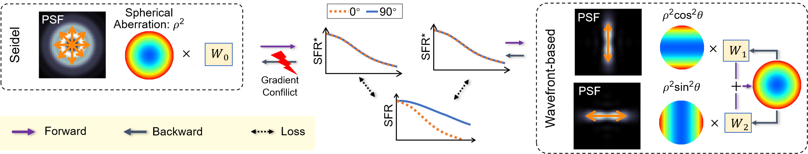
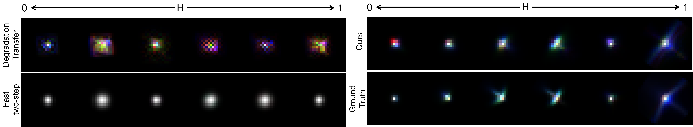

Accurate blur estimation is essential for high-performance imaging across various applications. Blur is typically represented by the point spread function (PSF). In this paper, we propose a physics-informed PSF learning framework for imaging systems, consisting of a simple calibration followed by a learning process. Our framework could achieve both high accuracy and universal applicability. Inspired by the Seidel PSF model for representing spatially varying PSF, we identify its limitations in optimization and introduce a novel wavefront-based PSF model accompanied by an optimization strategy, both reducing optimization complexity and improving estimation accuracy. Moreover, our wavefront-based PSF model is independent of lens parameters, eliminate the need for prior knowledge of the lens. To validate our approach, we compare it with recent PSF estimation methods (Degradation Transfer and Fast Two-step) through a deblurring task, where all the estimated PSFs are used to train state-of-the-art deblurring algorithms. Our approach demonstrates improvements in image quality in simulation and also showcases noticeable visual quality improvements on real captured images.
Main Idea
How we accurately estimate a multi-dimensional PSF :
Two-step PSF estimation framework. The first step is dedicated to learning spatially variant monochromatic aberration by aligning with the measured spatial frequency response curves. The second step focuses on learning PSF shifts across channels, utilizing the measured chromatic area difference data.
Diagram of the proposed two-step PSF estimation framework.
A novel wavefront-based PSF model that simplifies optimization and improves estimation accuracy. In the Seidel PSF model (left), the spherical aberration basis creates a circular PSF with 360° blur, causing identical SFR in the 0° and 90° directions, resulting in gradient conflicts. Our model addresses this by affecting the SFR in one direction, allowing independent adjustment of coefficients to better match the measured SFR.

A toy example showing how the proposed PSF model improves estimation accuracy.
Comparison Experiment
PSF Accuracy: As shown below, PSF estimates using Degradation Transfer (ICCV 2021), Fast Two-step (ECCV 2022), and our method, compared with the ground truth PSF.

Estimated PSFs and ground truth.
Deblurring Performance Comparison: As shown below, from left to right: sharp output image deblurred by the pre-trained Restormer, using training data synthesized from our estimated PSF; real captured image patches from a custom-built imaging system (Edmund Lens: #63762 and onsemi AR1820HS sensor); deblurred image patches from pre-trained Restormers using data synthesized with estimated PSFs from Degradation Transfer (ICCV 2021), Fast Two-step (ECCV 2022), and our approach. MUSIQ↑ / MANIQA↑ scores are shown in the bottom-right corner.
Performance comparison with state-of-the-art methods on real captures.
More Results
Deblurring results for an outdoor scene captured with a Canon EOS600D camera. From left to right: sharp output produced by our method, comparison patches (top: captured patches, bottom: patches deblurred by our method using Restormer).
Original capture (left) taken with a Canon EOS 600D at a focal length of 55mm, a focal distance of 1m, and an object distance of 5m, alongside the deblurred output (right).